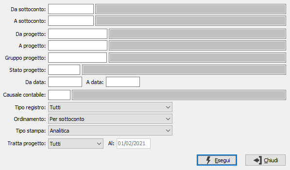

Situazione contabile progetti
Il programma effettua l’analisi dei movimenti contabili suddividendoli per progetto; vengono considerati solo i movimenti contabili che hanno un riferimento ad un progetto.

E' possibile selezionare i movimenti da stampare per sottoconto, per progetto, per gruppo progetto, per stato progetto, per data movimento e per causale contabile specificandoli nei relativi campi a video; è possibile selezionare i movimenti contabili per tipo di registro IVA (vendite, acquisti, corrispettivi, solo giornale o tutti) tramite la casella "Tipo registro", è possibile ordinare la stampa per sottoconto o per progetto tramite la casella "Ordinamento". Tramite la casella "Tipo stampa", il report può essere prodotto in formato analitico, riportando analiticamente tutti i movimenti risultanti dall'elaborazione; in formato sintetico, con solo progetto e sottoconto in base all'ordinamento; oppure in formato sintetico raggruppato che riporta solo il totale per il campo di ordinamento (sottoconto o progetto).
E' possibile indicare lo stato dei progetti da analizzare tramite il parametro "Tratto progetto" scegliendo tra Tutti, Aperto, Chiuso o Sospeso; per gli stati Aperto e Chiuso è possibile indicare una data.